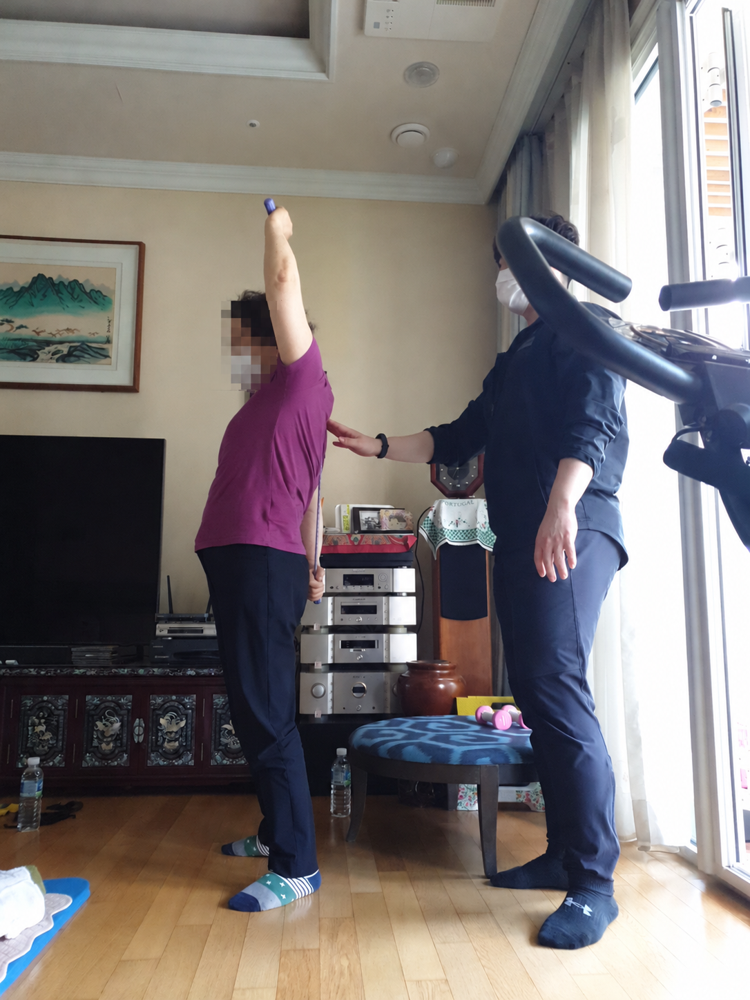
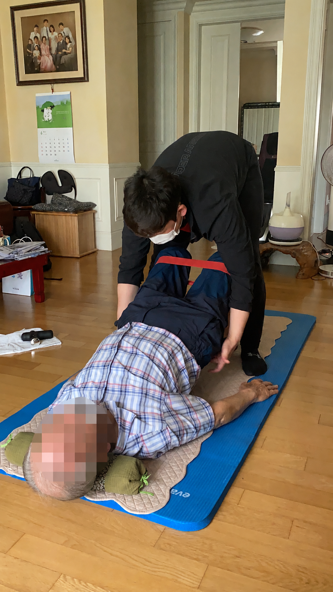
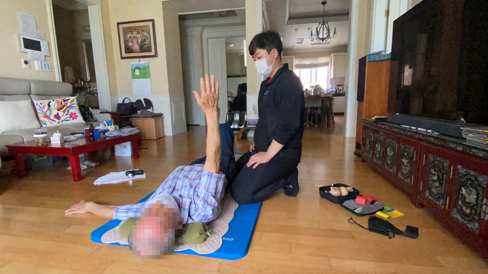
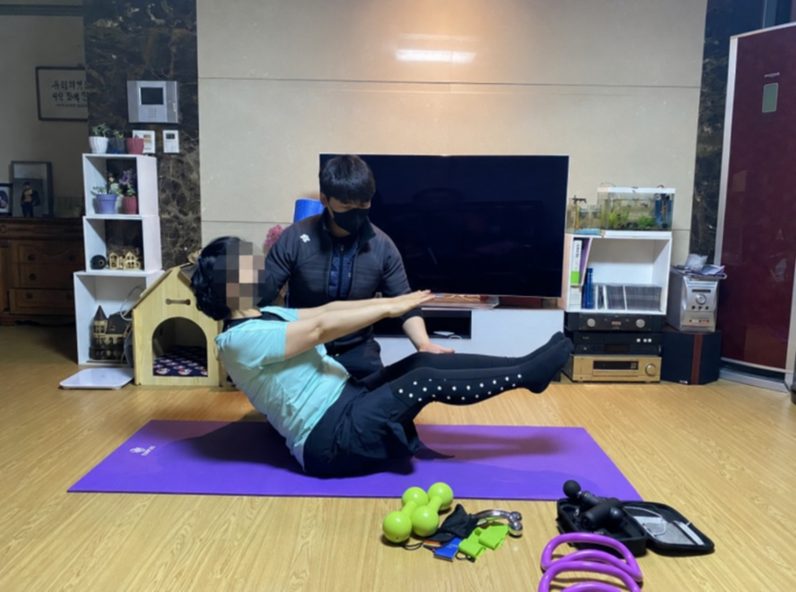
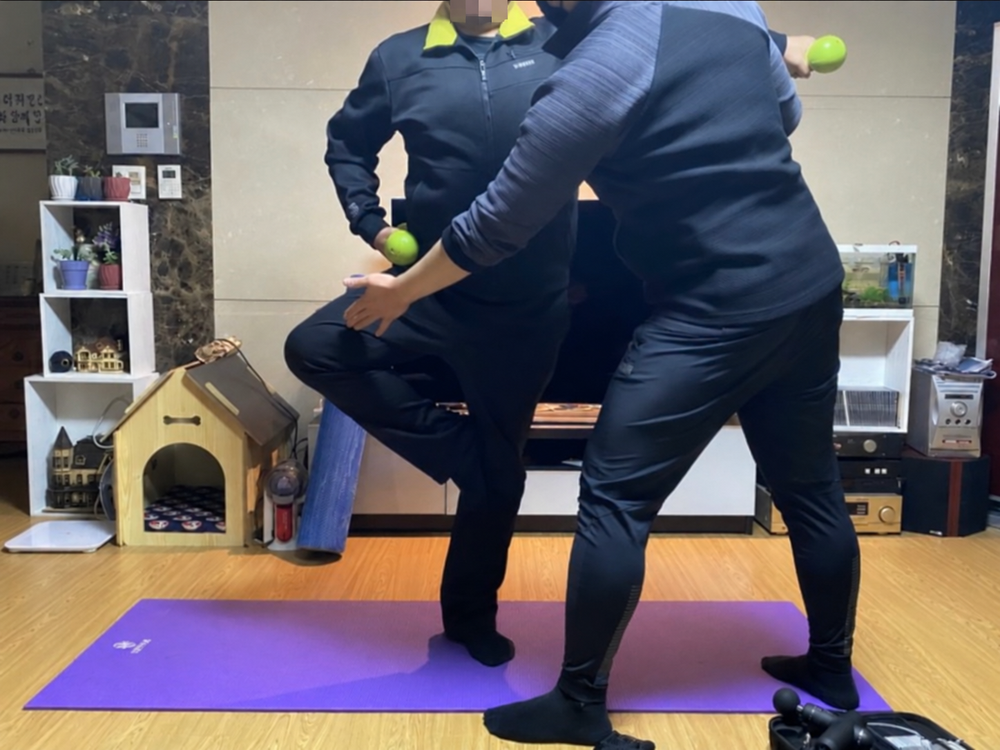
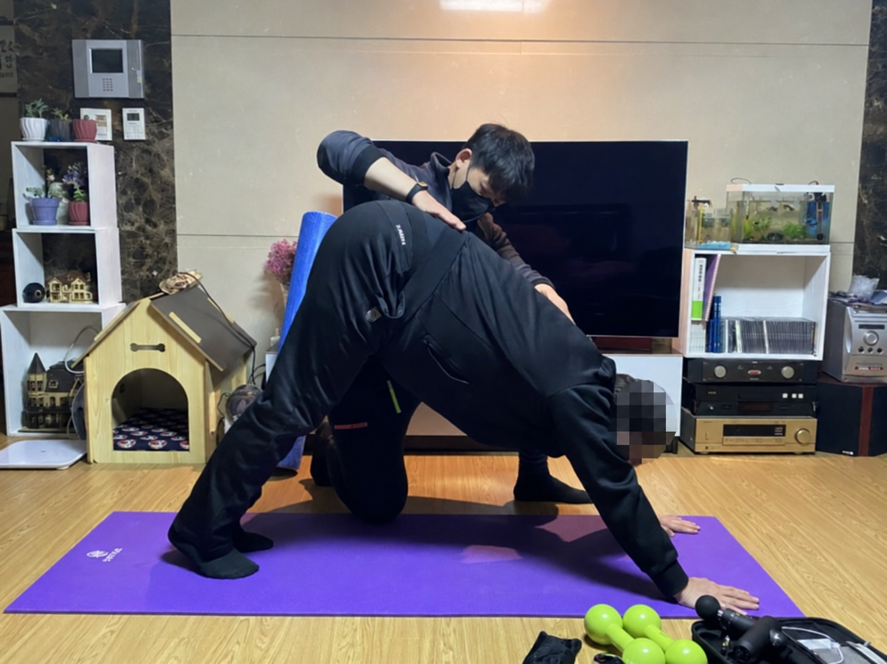

재능기부 봉사 · –
함께 움직이는 일상,
재능기부 봉사
운동 지도의 경험을 나누며 함께한
2025년 재능기부 봉사 현장을 소개합니다.

운동으로 전하는 나눔
각자의 움직임에 맞춰 함께한 시간
손진석 대표원장은 2025년 1월부터 12월까지 사회적 약자를 대상으로 운동 지도 재능기부 봉사를 진행했습니다.
참여자의 움직임을 가까이에서 살피며 매트 운동, 소도구를 활용한 운동, 균형 동작 등을 함께했습니다. 일상 속에서 몸을 움직이는 경험을 나눈 현장을 사진으로 전합니다.
- 기간
- –
- 활동
- 사회적 약자를 위한 운동 지도 재능기부 봉사
- 지도
- 손진석 대표원장
소도구와 함께하는 운동
하나의 동작도 세심하게
덤벨과 밴드를 활용해 팔을 올리거나 골반을 들어 올리는 동작을 연습했습니다. 동작을 수행하는 동안 옆에서 자세를 살피고 움직임을 도왔습니다.



균형과 움직임
곁에서 돕고, 함께 움직이며
앉은 자세와 선 자세에서 균형을 잡는 동작, 상체를 숙이는 동작 등 다양한 움직임을 함께했습니다. 참여자의 자세에 맞춰 필요한 부분을 지지하며 운동을 이어갔습니다.



함께하는 건강한 일상
운동의 경험을 나누다
각자의 속도로 몸을 움직이는 시간이 일상의 작은 활력으로 이어지기를 바랍니다. 분당튼튼운동센터는 운동 현장에서 쌓은 경험을 나누고, 한 사람 한 사람의 움직임을 세심하게 살피겠습니다.
외부 활동 목록 보기